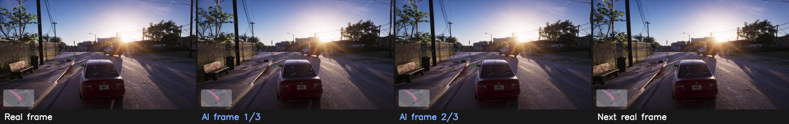

Capture Smooth
Free, open-source AI frame generation for a capture card feed. Plug your console into a capture card: Capture Smooth adds AI frames between the real ones on your PC's graphics card. A 30 fps game is shown at 60 or 90 fps, and a 60 fps game at 120 fps, with low added latency.
Side by side, real time
Left: what the console sends (30 fps). Right: with Capture Smooth at x2 (60 fps). This video plays on any screen; the 90 fps version is just below.
90 fps (x3)
The setting the app uses for a 30 fps game: two AI frames between each real one. This video is 90 fps, so the difference shows fully on a screen of 90 Hz or more (on a 60 Hz screen it looks like the video above).
Slow motion (1/4 speed)
Slowed down, the difference is visible on any screen: the original repeats each game frame, Capture Smooth fills the gap with AI frames.
What the AI adds
Two consecutive real frames from the game, and the two frames Capture Smooth generates between them at x3.

Measured
RTX 4070 SUPER, console output in 4K, captured at 1440p.
How it works
- Duplicates removed. A 30 fps game in a 60 Hz signal sends every frame twice. Copies are detected and skipped, so AI frames are only made between real game frames.
- RIFE 4.6 estimates the motion between two frames and builds the in-between ones. Unlike DLSS 3, it needs nothing from the game engine, so it works on any video.
- Low latency. The motion is estimated at half resolution, the whole AI step runs as a single CUDA graph, and late frames are dropped instead of queued.
Get started
- Download the latest release: NVIDIA (fastest, two zip parts to extract in the same folder) or DirectML (any DirectX 12 GPU).
- Close OBS and your capture card's software.
- Double-click the exe, pick your console's output resolution and the game's frame rate, then press Lancer.
Keys: Esc quit · Space AI on/off · 2 / 3 / 4 multiplier · F1 counter · M sound. Full guide in the README.